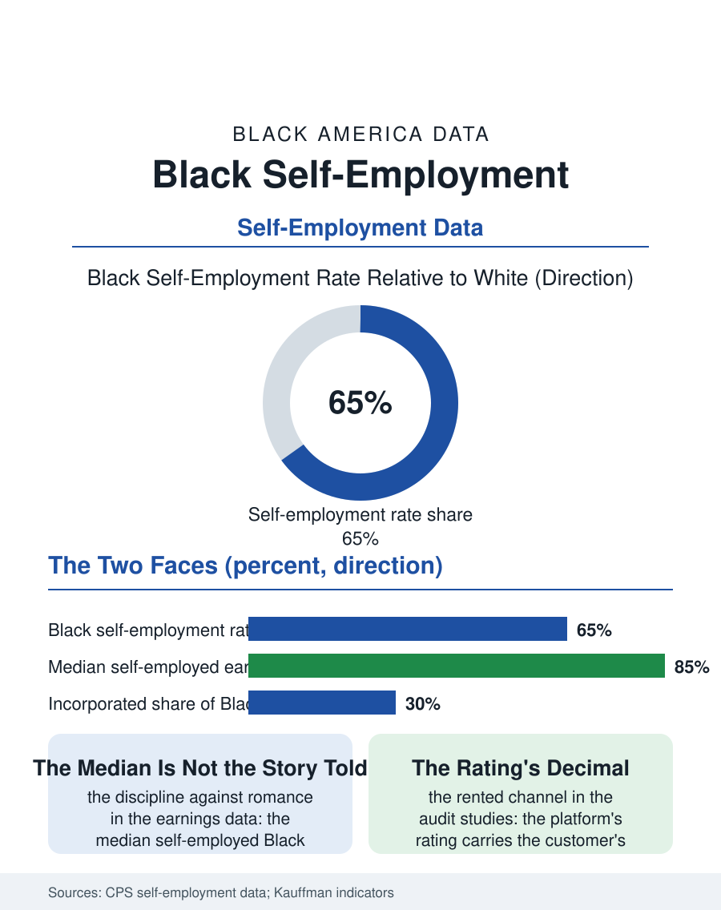

Black Employment
The Table and the Invoice: Black Self-Employment
A million proprietors, the median earning less than the employee, the tail building the wealth: the independence and its invoice. The self-employment file.

Self-employment is the business file's other face, the worker without the firm: roughly a million Black workers are self-employed in the survey data, at rates below the white figure, earning less at the median than Black employees in the same surveys, in a sector that is simultaneously the wealth file's ladder and the safety net's absence. This article reads the self-employment file.
Rates, Earnings, and the Two Faces
The Current Population Survey's counts give the file its base: the Black self-employment rate runs at roughly two thirds the white rate, the incorporated share, the segment whose earnings and survival the business data flatter, thinner still, so that the Black self-employed concentrate in the unincorporated trades and services, the personal care and the repair and the driving and the cleaning of the other files' micro-tiers. The earnings file is the file's discipline against romance: the median self-employed Black worker earns less than the median Black employee in the annual data, the distribution's right tail, the successful proprietor's, being the wealth file's material while the median's reality is the hours and the absent benefits, the health insurance bought at the individual market's price or forgone in the coverage data's gap for the self-employed, the retirement contribution the employee's match subsidizes and the proprietor's cash flow defers. The entry file is the displacement's: the self-employment entry rate rises in the unemployment data's downturns, the necessity's push composing a share of the inflow that the opportunity's pull does not explain, and the survival data sort the two entries' firms with the actuary's indifference. The disaster file gives the sector its stress test in the data: the self-employed's income stops with the event entire, no employer's continuity behind it, and the relief programs' reach into the sector, the pandemic's grants and loans administered through the tax and banking files the proprietor may not inhabit, measured the sector's administrative invisibility in the applications it could not file, a gap the portable infrastructure's advocates enter as their first exhibit.
Credit, Clients, and the Platform
The capital file repeats the business section's: the self-employed borrow against the house and the card in the pattern of the wealth file's thin collateral, the loan denial data's self-employed cell being among the credit file's steepest. The client file is the platform era's: the marketplaces that dispatch the cleaner, the driver, the tasker, rebuilt the self-employed's customer acquisition as a rented channel, the rating as the reputation's portable form, the fee as the rent, with the Black proprietor's ratings in the audit studies carrying the customer's bias in the score's decimal, the platform's neutrality being the file's current research question. The tax file is the self-employed's paperwork state entire, the quarterly estimates and the self-employment tax's double share, administered by the worker herself or the storefront preparer of the tax file, whose refund products price the year's liquidity at the season's rate.
The Ladder's Honest Rungs
The self-employment file closes on the sector's honest accounting, because it is the employment file where the community's ideology and the data argue most openly: the independence is real, the schedule's sovereignty and the ceiling's absence are the goods the proprietors name first in every survey, and the median's arithmetic is the price list for those goods in the current economy's terms, a price the incorporated and the scaled minority of the sector escape and the median pays. The policy file's levers are the portable benefit and the credit file's, the experiments that attach the benefit to the worker rather than the job being, in the current pilots, aimed precisely at this file's population. The surveys count the self-employed each month, the Black rate's slow climb in the recent data being the file's trend to watch against the platform's reclassification weather. The file's last entry is the proprietor's Sunday bookkeeping, the week's receipts and the quarter's estimate at the kitchen table that is also the office, the independence and its invoice in the same hour, which is the sector's whole truth in one sitting, and the reason its ranks refill in every generation that reads the wage files and chooses the table anyway. The table refills because the alternative's own invoice is also on it.
More in Black Employment
The Black Unemployment Rate: The Two-to-One Pattern
Black unemployment runs at roughly twice the White rate — 5.5 percent against 3.3 percent in annual averages — a ratio stable across five decades of federal data. How it is measured and why it persists.
Black Median Weekly Earnings: The 80-Cent Ratio
Black full-time workers earn a median of about $900 a week — roughly 80 cents for every dollar White workers earn. The BLS earnings data by group, gender, and occupation.
Black Labor Force Participation: Working at National Rates
Black labor force participation runs at roughly the national rate — and Black women participate at higher rates than White women. The BLS participation data.
Source: Current Population Survey self-employment data; Kauffman Foundation entrepreneurship indicators; Small Business Administration analyses.